艦これ夏イベント2015：E2 連合艦隊、ソロモン海へ！
執筆日時：
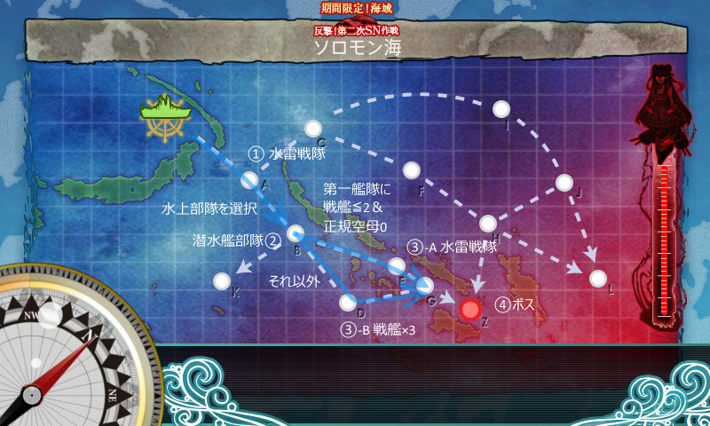
難易度甲、水上部隊を選択（お札が E1 と共通なので、艦娘を使いまわしたかった）。
基本方針
2.5軍ぐらいで、史実が絡まない海外戦艦、潜水艦対策の航戦などから編成。火力が足りなかったので、第二艦隊の強化（重巡・雷巡投入）。また、途中でルート制御のために第一艦隊を再編成した。
- 第一艦隊
- Italia(Lv83) 日向改(Lv80) 伊勢改(Lv81) Roma改(Lv82) 龍鳳改(Lv96) 飛鷹改(Lv96)
- 熊野改(Lv92) 日向改(Lv81) 伊勢改(Lv81) 鈴谷改(Lv92) 龍鳳改(Lv96) 飛鷹改(Lv96)
- 第二艦隊
- 川内(Lv122) Lv70～80の駆逐艦×5
- 木曾(Lv96) 衣笠(Lv89) 青葉(Lv92) 白露(Lv81) 村雨(Lv81) 川内(Lv122)
装備はぶっちゃけ適当。
戦闘経過
11回出撃（うち4回ほどは編成を探るための小手調べ、1回はブラウザーを誤って閉じる。正味6回）、ボス4回撃破でクリア。
- 第一艦隊 戦艦×4＋軽空母×2 第二艦隊 軽巡×1＋駆逐×5
- A → B
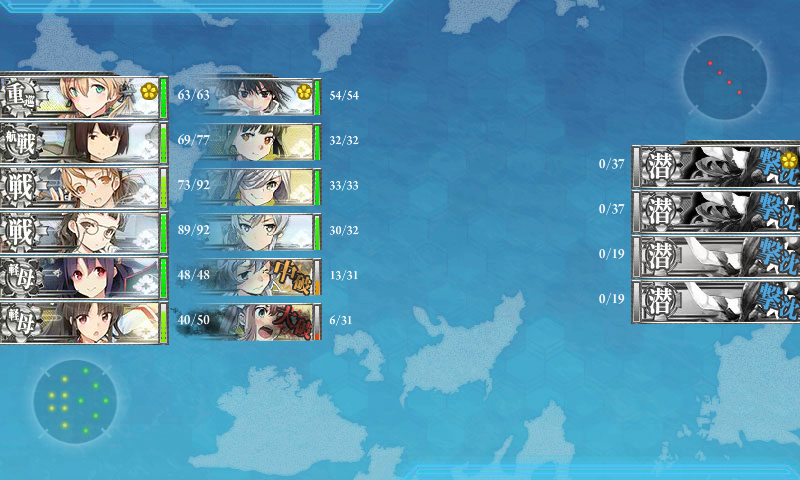 - マスの潜水艦がクソ痛い死ぬ（→ 艦隊司令部施設を装備）
- A → B
- 第一艦隊 戦艦×4＋軽空母×2 第二艦隊 軽巡×1＋駆逐×5
- A → B → D
- 第一艦隊 戦艦×4＋軽空母×2 第二艦隊 軽巡×1＋駆逐×5
- A
- 第一艦隊 戦艦×4＋軽空母×2 第二艦隊 軽巡×1＋駆逐×5
- 退避艦をだした状態ではボスきつい……
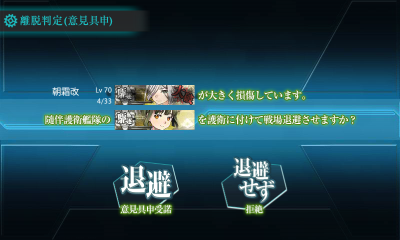 - A → B → D → G → Z
- ボスにかすり傷一つつかず
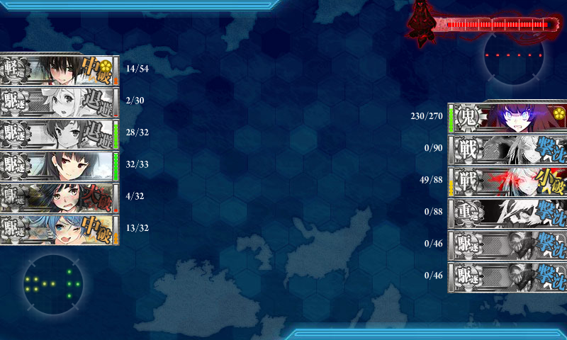
- 退避艦をだした状態ではボスきつい……
- 第一艦隊 戦艦×4＋軽空母×2 第二艦隊 軽巡×1＋雷巡×1＋重巡×2＋駆逐×2
- 第二艦隊の大幅増強が功を奏してボス到達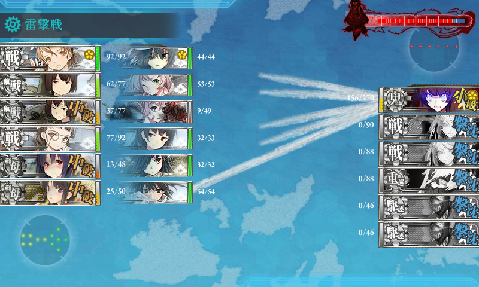
- A → B → D → G → Z（撃破1回目）
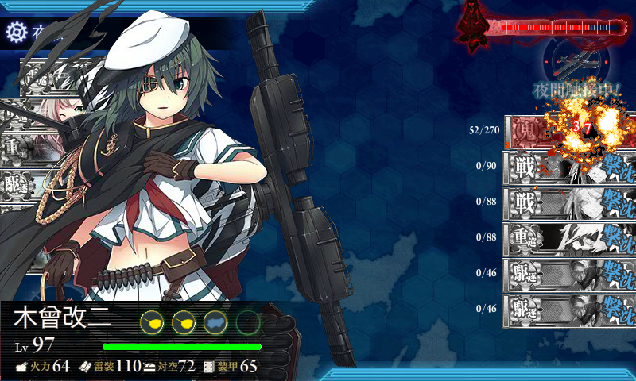
- 第一艦隊 戦艦×4＋軽空母×2 第二艦隊 軽巡×1＋雷巡×1＋重巡×2＋駆逐×2
- A → B → D
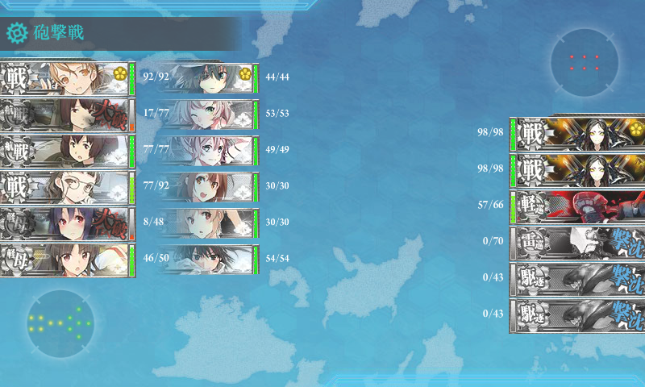 - D マスの戦艦痛い死ぬ（→ ルート制御のために編成変更）
- A → B → D
- 第一艦隊 戦艦×2＋航巡×2＋軽空母×2 第二艦隊 軽巡×1＋雷巡×1＋重巡×2＋駆逐×2
- 第一艦隊を戦艦2隻以下に押さえる → 直進ルート
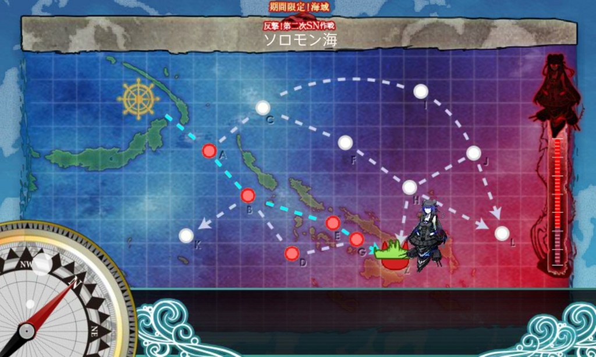 - A → B → E → G → Z（撃破2回目）
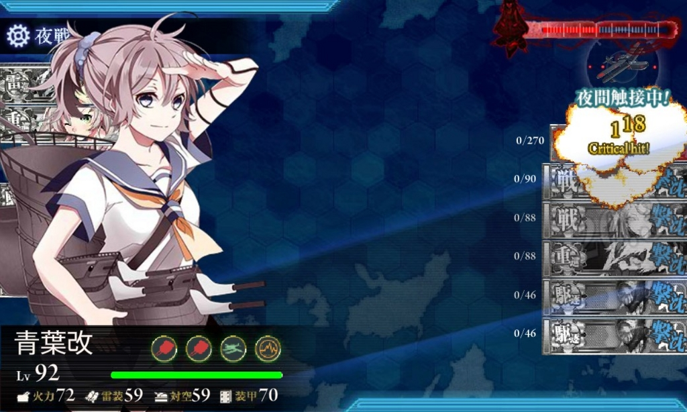
- 第一艦隊を戦艦2隻以下に押さえる → 直進ルート
- 第一艦隊 戦艦×2＋航巡×2＋軽空母×2 第二艦隊 軽巡×1＋雷巡×1＋重巡×2＋駆逐×2
- A → B → E（間違ってブラウザ閉じた／(＾o＾)＼）
- 第一艦隊 戦艦×2＋航巡×2＋軽空母×2 第二艦隊 軽巡×1＋雷巡×1＋重巡×2＋駆逐×2
- A → B → E → G → Z（撃破3回目）
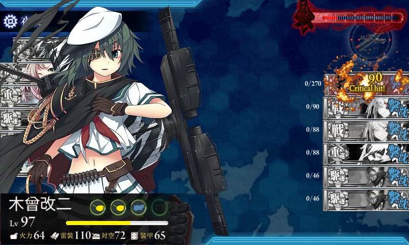
- A → B → E → G → Z（撃破3回目）
- 第一艦隊 戦艦×2＋航巡×2＋軽空母×2 第二艦隊 軽巡×1＋雷巡×1＋重巡×2＋駆逐×2
- A → B → E → G → Z（ボス最終形態、打ち漏らし）
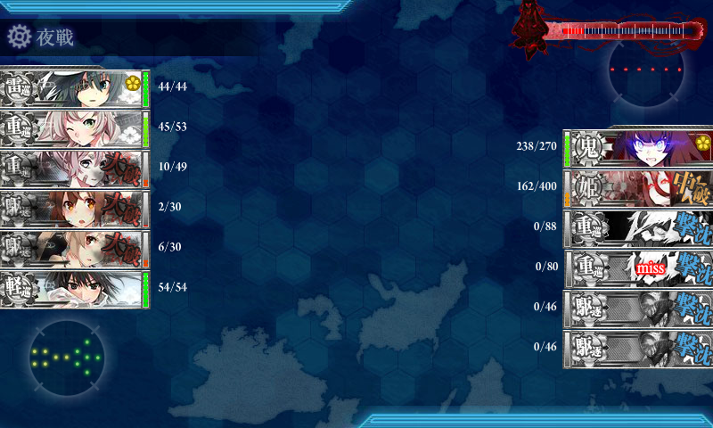
- A → B → E → G → Z（ボス最終形態、打ち漏らし）
- 第一艦隊 戦艦×2＋航巡×2＋軽空母×2 第二艦隊 軽巡×1＋雷巡×1＋重巡×2＋駆逐×2
- 決戦支援（戦艦×2、正規空母×2、駆逐×2）を送る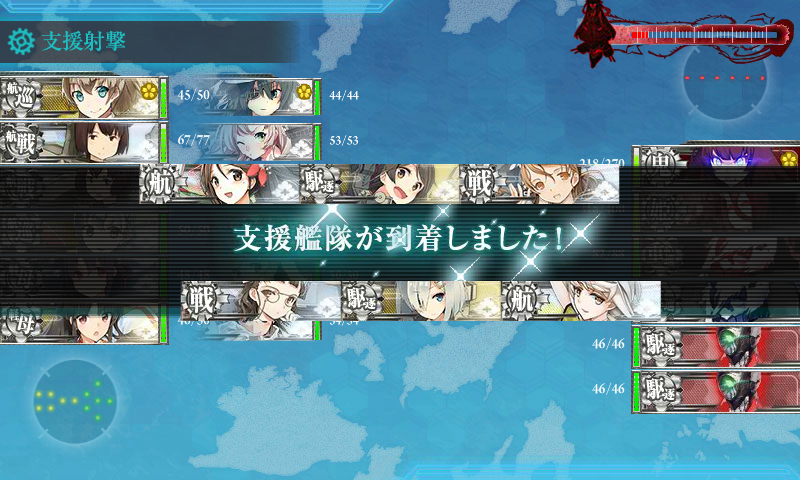
- A → B → E → G → Z（撃破4回目）
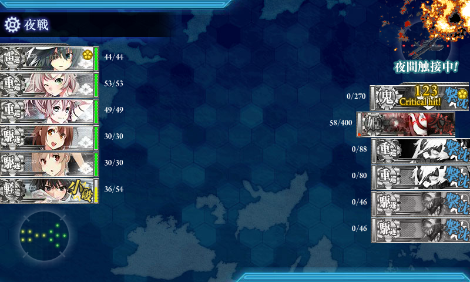 - ドロップ「初風」
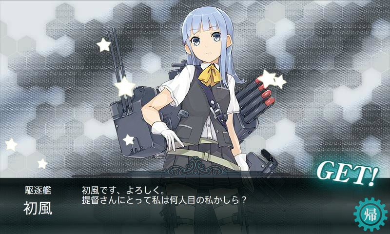
まとめ
艦隊編成を手探りしてた4戦目までは割とキツいと思っていたけれど、編成を見つけてからは楽だった。
- 第一艦隊は直進（A → B → E → G → Z）できる正規空母0＋戦艦2以下の編成（確定じゃないけど、多分そうだと思う）がお勧め
- 第二艦隊は連合艦隊の縛りが許す限りで強力に（ただし、先のことも考えること）。第二艦隊を強化したら、B マスの雷撃で撤退することがなくなったが、因果関係は不明
- トドメは決戦支援の艦隊を出すのがお勧めかも